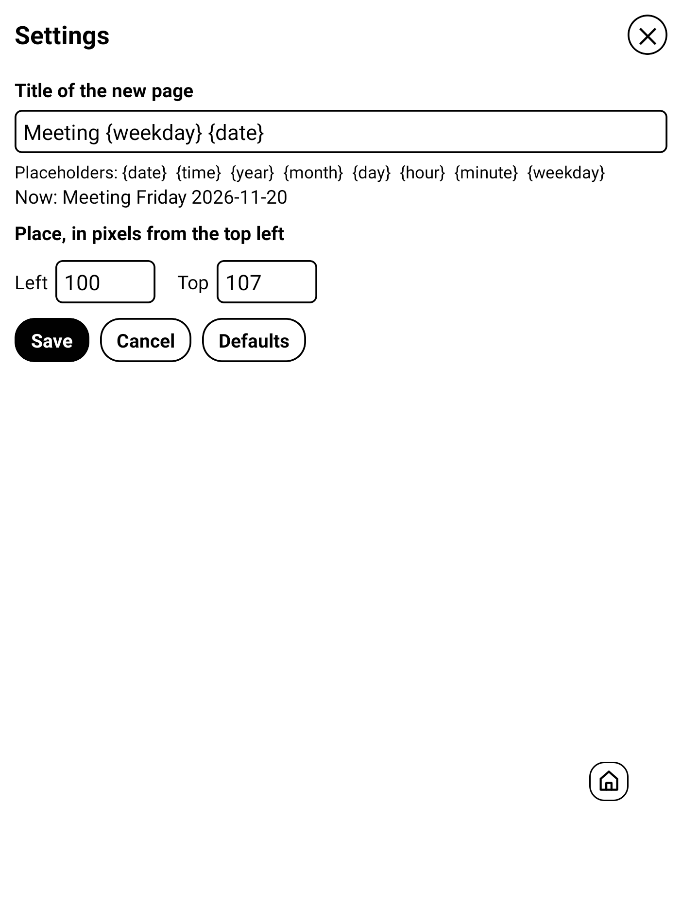
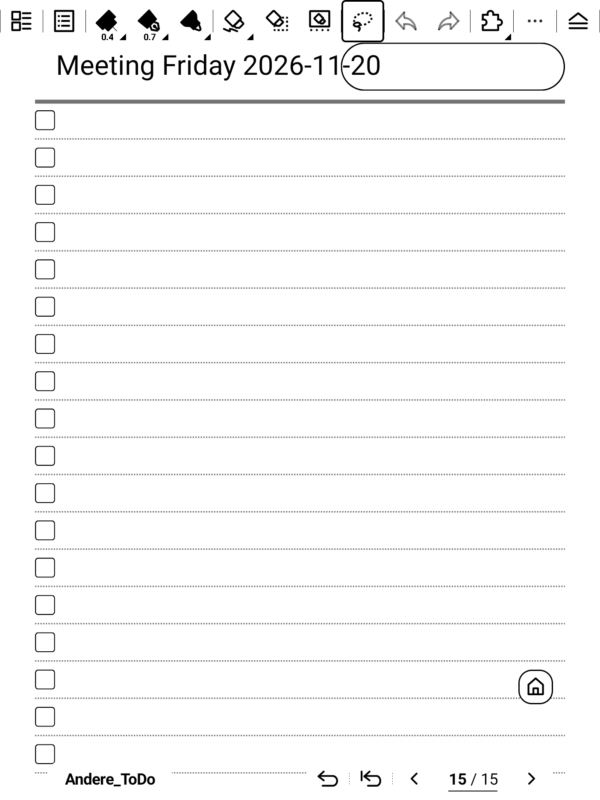

SNAddPage
Turn a line in your notes into a link to a fresh meeting page.
Write the topic in your agenda, lasso it, pick your meetings notebook, and the page for the minutes is ready, dated and linked.
Free and open source. So far only tested on a Supernote Nomad (A6X2).
What it does
One button in the lasso toolbar of a note, full screen, and closes with the ✕.
From the lasso
Select handwriting or a text box and tap Add meeting. That selection becomes the link.
Any notebook
Every note in your Note folder, with the open note on top and the one you used last right below. The open note itself works too.
Same paper
The new page gets the template of the last page, also when that is your own template from MyStyle.
Dated header
Meeting 2026-11-20 at the top left of the page, and as a keyword, so you find it in the keyword list.
Your own header
Under Settings, type your own title with placeholders such as {weekday} and {time}, and choose where it goes on the page.
A link that stays right
A normal Supernote link with an underline. It keeps pointing to the meeting page when you add pages before it.
No surprises
If a step fails, you see which one, what the device answered and what was already done.
How it works
Four taps, and you are back in your note.
- In a note, select a few words with the lasso: handwriting, or one text box.
- Tap Add meeting in the lasso toolbar.
- Tap the notebook that gets the meeting page.
- Done: your selection is a link. Tap it to open the new page.
The new page, at the end of the notebook you picked
On the Nomad
Tap a screenshot to see it full size.




Install
- Download
SNAddPage.snplgwith the button above. - Connect your Supernote by USB and copy the file to the
MyStylefolder. - On the device, go to Settings → Apps → Plugins → Add Plugin, pick the file and install it.
- Open a note and lasso something: Add meeting is now in the lasso toolbar.
The first time, the device asks permission to read and to change your notes. Grant it, or the plugin can't add the page.
Good to know
- Only notes in the
Notefolder are listed, plus the open note. Notes on an SD card or a USB stick are not. - The header is a text box and a keyword, not a real title: plugins can only make titles from handwriting in the open note.
- A text box with a link is no longer editable, because a tap follows the link. Remove the link to edit it.
- Nothing is undone automatically when a step fails. The plugin tells you what to clean up.
- Your settings are kept on the device. After reinstalling the plugin you may have to set them again.
- So far it is only tested on a Supernote Nomad (A6X2). Tried it on another device? Let me know in an issue.